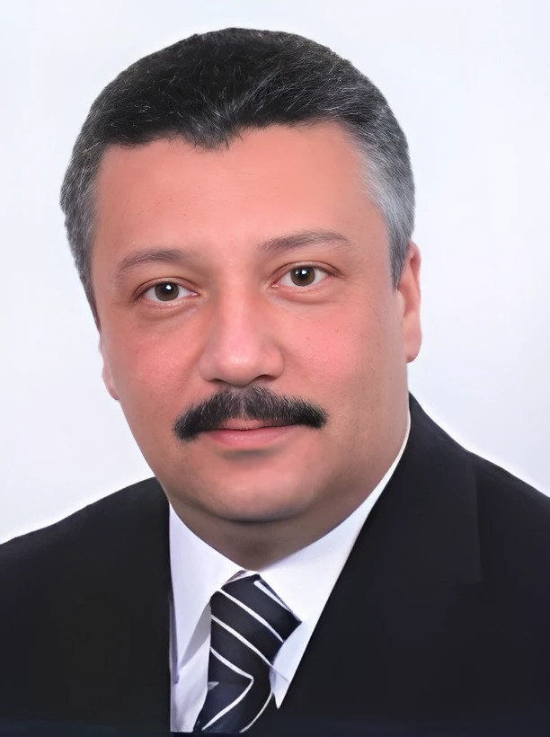

أستاذ علم المكتبات والمعلومات – كلية الآداب، جامعة القاهرة ️
رئيس قسم المكتبات والوثائق والمعلومات الأسبق
📍 النشأة والتعليم
- ليسانس الآداب في المكتبات والوثائق من جامعة القاهرة عام 1982.
- ماجستير في علم المكتبات والمعلومات من جامعة ليدز ببريطانيا عام 1987.
- دكتوراه في علم المكتبات والمعلومات من جامعة القاهرة عام 1991.
🧑🏫 المسيرة الأكاديمية والمهنية
- بدأ مسيرته الأكاديمية كمعيد بقسم المكتبات والوثائق بجامعة القاهرة، وتدرج في المناصب الأكاديمية حتى حصل على درجة الأستاذية.
- شغل منصب رئيس قسم المكتبات والوثائق والمعلومات بكلية الآداب جامعة القاهرة. ️
- عمل أستاذاً بجامعة الملك عبد العزيز بجدة.
- مدير المكتبة المركزية الجديدة لجامعة القاهرة.
- رئيس الإدارة المركزية لدار الكتب المصرية (المكتبة الوطنية المصرية) التابعة لوزارة الثقافة المصرية. ️
- مستشار إدارة المعلومات والاتصال بالمنظمة العربية للتربية والثقافة والعلوم (الأليكسو).
- مستشار تحرير الكتاب الدوري المحكم "بحوث في علم المكتبات والمعلومات" الصادر عن مركز بحوث نظم وخدمات المعلومات – التابع لكلية الآداب – جامعة القاهرة.
📚 الإنتاج العلمي
للدكتور شريف كامل شاهين العديد من المؤلفات والأبحاث في مجال علم المكتبات والمعلومات، تشمل:
- دراسات في مجال تنظيم المعلومات واسترجاعها.
- أبحاث حول تطور المكتبات الرقمية.
- العديد من المقالات والأبحاث المنشورة في الدوريات العلمية المتخصصة.
- إشراف على العديد من رسائل الماجستير والدكتوراه.
- له العديد من الاسهامات في المؤتمرات والندوات المتخصصه. ️
🌍 المشاركات والعضويات
رئيس تحرير عدة مجلات متخصصة، منها:
- عضو في العديد من اللجان والمجالس العلمية المتخصصة في مجال المكتبات والمعلومات.
- شارك في العديد من المؤتمرات والندوات المحلية والدولية.
🏅 الجوائز والتكريم
- مقرر لجنة جائزة الدولة التشجيعية في مجال الإعلام بالمجلس الأعلى للثقافة.
- محكم جائزة إتحاد الناشرين المصريين في معرض القاهرة الـدولي للكتـاب.
- فاز بمنصب نائب رئيس اللجنة الإقليمية لبرنامج ذاكرة العالم باليونسكو.